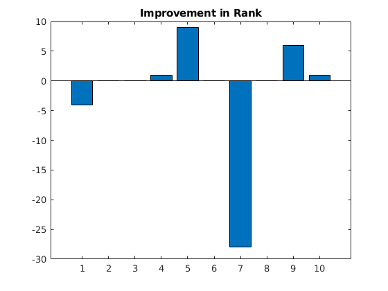
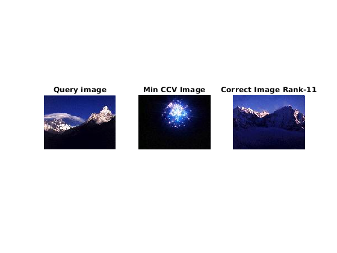
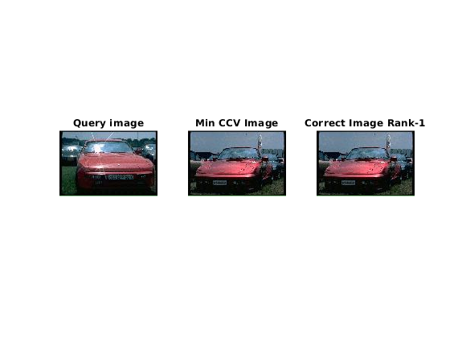
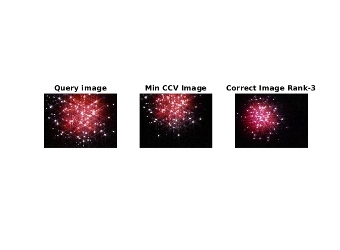
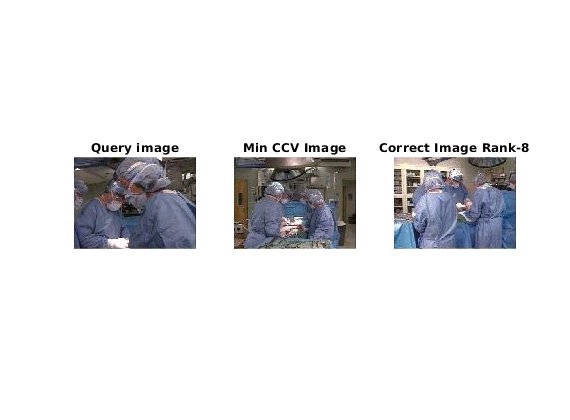
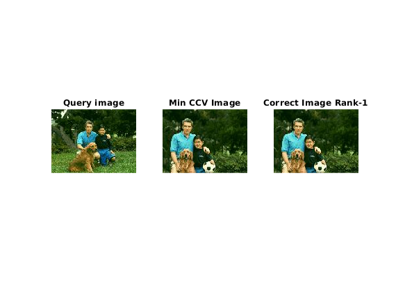
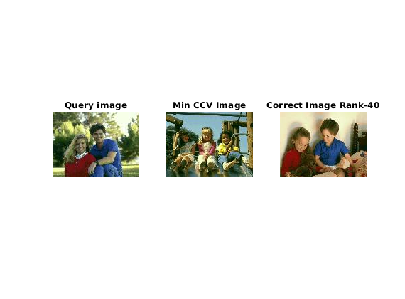
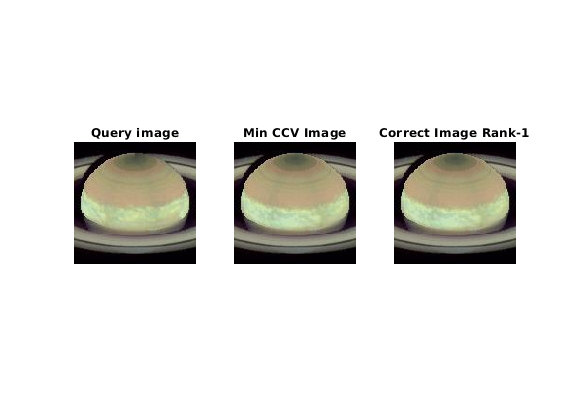
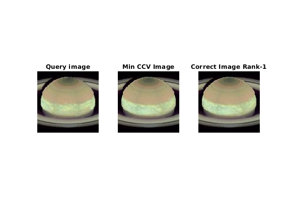

Contents
List of Images from Database
% Query images q = [1,6,135,158,179,100,114,146,133,40]; % "Correct" image c = [3,7,136,161,180,112,116,147,130,38]; list = zeros(size(q,1));
Looping through the queries
for a = 1:10 q_name = strcat(int2str(q(a)),'.jpg'); q_img = imread(q_name); [q_ccv, qhist] = getccv(q_img); c_name = strcat(int2str(c(a)),'.jpg'); c_img = imread(c_name); [c_ccv, chist] = getccv(c_img); dist = zeros(1,180); hdist = zeros(1,180); for i = 1:180 name = strcat(int2str(i),'.jpg'); img = imread(name); [ccv, hist] = getccv(img); dist(i) = (sum(sum(abs(ccv - q_ccv)))); % Using L2 Norm hdist(i) = (sum(sum(abs(hist - qhist)))); % Using L2 Norm end dist(q) = Inf; hdist(q) = Inf; [h,k] = min(dist); [hd,kd] = min(hdist); dist = sort(dist); hdist = sort(hdist); dist = abs(dist - sum(sum(abs(c_ccv - q_ccv)))); rank = find(~dist); % Rank of "correct" image hdist = abs(hdist - sum(sum(abs(chist - qhist)))); hrank = find(~hdist); % Rank of "correct" image list(a) = hrank - rank; % Plotting the output figure(); subplot(1,3,1); imshow(q_name); title('Query image'); subplot(1,3,2); imshow(strcat(int2str(k),'.jpg')); title('Min CCV Image'); subplot(1,3,3); imshow(c_name) title(strcat('Correct Image Rank-',int2str(rank))); end figure(); bar(list); title('Improvement in Rank');

Calculating CCV of a image
function [CCV, hist] = getccv(img) coherentThres = 2; colorbins = 512; CCV = zeros(2,colorbins); hist = zeros(1,colorbins); % Smoothing the image gaussian = fspecial('gaussian',[5 5],2); img = imfilter(img,gaussian,'same'); [img, bins]= discretizeColors(img,colorbins); imgsize = (size(img,1)*size(img,2)); thresh = int32((coherentThres/100) *imgsize); for i = 0 : bins-1 bin_val = img==i; % Selecting a bin value region = bwconncomp(bin_val); % Calculating the 8 connected region comps_size = cellfun(@numel,region.PixelIdxList); coherent = sum(comps_size(comps_size>=thresh)); % Getting coherent pixels CCV(:,i+1) = [coherent; sum(comps_size) - coherent]; hist(:,i+1) = sum(comps_size); % Color histogram end end     
 
 Discretizing the Image
function [discrete_img, bins] = discretizeColors(img, numcolors) width = size(img,2); height = size(img,1); discrete_img = zeros(height,width); % Image is 3 channel, thus for each channel we have V unique values % Calculating the value of V such that V x V x V = numcolors numbins = floor(pow2(log2(numcolors)/3)); numbinssq = numbins*numbins; % Re-Scaling the pixel intensities to [0,numbins] img = floor((img/(256/numbins))); for i=1:height for j=1:width discrete_img(i,j) = img(i,j,1)*numbinssq + img(i,j,2)*numbins + img(i,j,3); end end bins = power(numbins,3); end